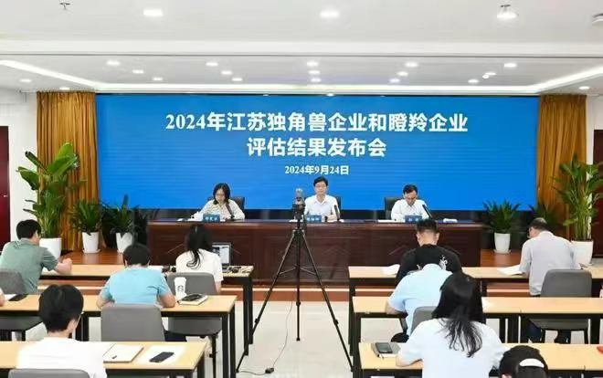

喜讯︱仟目激光荣登江苏省潜在独角兽企业榜单
近日，江苏省生产力中心公布了2024年江苏独角兽企业、潜在独角兽企业评估结果，徐州仟目科技集团有限公司（简称"仟目激光"）凭借强大研发实力、快速成长能力及巨大发展潜力，成功入选江苏省潜在独角兽企业榜单。


潜在独角兽
科技创新能力与产业发展能力的认可
潜在独角兽企业是科技创新企业的典型代表，在引领科技创新、开拓新领域新赛道、塑造发展新动能新优势等方面发挥了重要作用。此次获评为江苏省潜在科技独角兽企业，代表着仟目激光在半导体激光器芯片赛道的持续创新和卓越实践得到充分认可。
仟目激光
高端半导体激光器芯片创新引领者

仟目激光是一家从事半导体激光器芯片的研发制造企业，致力于为客户提供更高速率更高功率更高性价比的激光芯片产品。仟目激光专注于不断改进激光技术和新产品的研发，在大功率VCSEL阵列、边发射激光器（EEL）和分布式反馈激光器（DFB）方面均可以满足客户对不同功率，不同封装的需求，为客户提供完整的垂直供应链。为了给客户提供更具竞争力的芯片产品，仟目激光在徐州投产6英寸砷化镓晶圆制造及封装产线，产线涉及外延生产、晶圆制造、解理镀膜、封装等环节，预计24年底投产成功，届时产线年产值可达6-8亿。
仟目激光在3C消费、IDC数通、高端制造等场景获得了多家头部客户的一致认可与批量订单，尤其是在IDC数通方向，25G芯片产品销售突破数百万片，50G已实现规模销售，100G即将量产，从业务成熟度与技术领先度，目前处于多模数通芯片的第一梯队。